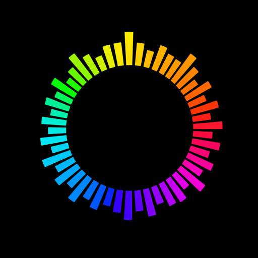

Offline music
GoRun Player
Tempo, Cadence & Watch Player
Take your music anywhere. Play offline, find music by tempo, and keep your rhythm with cadence on iPhone and Apple Watch.
A lightweight offline music player: import your own music, organize your library and playlists, explore songs by tempo, and use cadence beats while running or working out. Transfer music to Apple Watch and listen without your iPhone.
Download on the App Store
→
Free, with an in-app purchase. GoRun Pro is $2.99.
- iPhone
- Apple Watch
- iOS 26
- watchOS 26
- Music
- 4+
- 15 MB